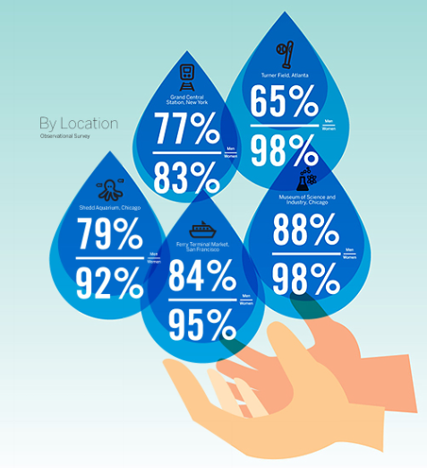

Tue, 02 Nov 2010 06:30:04 · infographic · health
Infographic: Who's Not Washing Their Hands?
Everyone claims they washed their hands, but do they really? A recent study found that although most people claim to wash their hands after dirty activities, when you observe them in person. the story [especially for men] is a little different. 
~ See full Infographic here.
What’s more, apparently, Americans get a “B” on Hand Hygiene; according to The American Cleaning Institute.